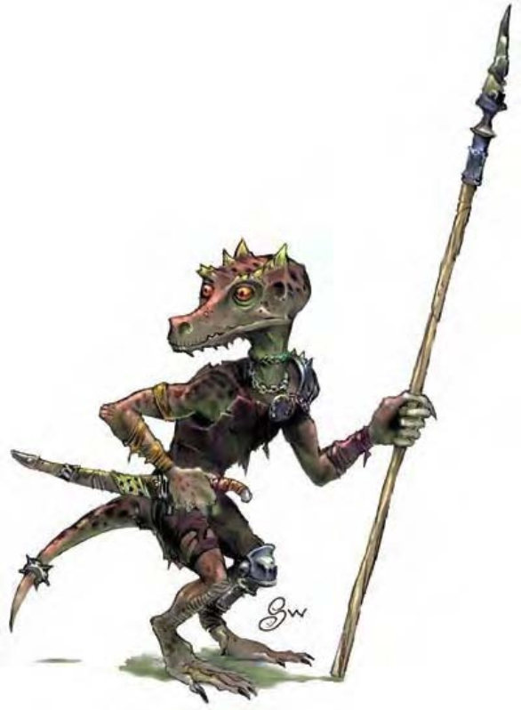

这种人形生物的体型近似侏儒或半身人。他的皮肤有鳞片，尾巴像老鼠般无毛，头部像狗还长着一对小角。
狗头人是一种矮小的爬行人形生物，个性懦弱又残忍。狗头人长有鳞片的皮肤，色泽纷杂从深锈棕到锈黑色。他们有一对发光的红眼。尾巴没有捕握盘卷的力量。狗头人衣衫褴褛，偏好红色或橘色系。
狗头人的主食是动植物，但也不讨厌吃其他智能生物。他们把大部分的时间花在构筑巢穴附近的防御工事警报装置上 (比如有尖刺的陷坑、连着十字弓的绊线与其他机械装置)。
狗头人痛恨各类人形生物与精灵生物，尤其是侏儒与小妖精。
狗头人身高2至2.5英尺，体重35到45磅。
狗头人通晓龙语，听起来却像是狗吠。
狗头人喜欢在人多势众 (两倍以上) 的状态下攻击或是先使诈。如果数量小于这个比例，他们通常会逃跑。然而遭遇侏儒时，只要数量相等，狗头人会立刻攻击。
狗头人会以投射弹丸开始战斗，看到敌人变弱才会靠近。狗头人会尽可能埋伏在陷阱周围，其目标是将敌人逼进陷阱，再围上去淋热油、射箭或是丢毒虫。
畏光 (特异)：暴露于日光或「昼明」的法术范围内将使狗头人感到目眩。
技能：狗头人在进行「手艺 (制作陷阱)」、「专业 (矿工)」与「搜索」检定时具有+2种族加值。
此处列出的狗头人武者在计算种族修正值前，具有下列属性：力量13、敏捷11、体质12、智力10、感知9、魅力8。
挑战级数：若具有非玩家人物职业，狗头人的挑战级数等于人物等级-3。
狗头人住在黑暗的地方，通常是地底或是茂密的森林里。他们是很好的矿工，也常住在正在挖掘的矿坑里。狗头人部族会派遣战团巡视巢穴四周半径10英里的范围，攻击任何入侵其领域的智慧生物。
狗头人通常会吃掉俘虏，但有时也会把俘虏卖为奴隶换钱。狗头人卑鄙的习性及对他族的猜忌怀疑使他们树立许多敌人。
在狗头人巢穴里，每10个成年狗头人就有1个不能作战的幼童与1个蛋。
狗头人的守护神是克图玛，他鄙视除了狗头人之外的所有生物。
狗头人人物具有下列种族特性：
― -4力量、+2敏捷、-2体质。
― 小型：防御等级+1加值、攻击检定+1加值、「躲藏」检定+4加值、擒抱检定-4减值、举重和负重能力是中型人物的四分之三。
― 狗头人的基本行走速度为30英尺。
― 黑暗视觉可达60英尺。
― 种族技能：狗头人在进行「手艺 (制作陷阱)」、「专业 (矿工)」与「搜索」检定时具有+2种族加值。
― 种族专长：狗头人依据其职业选择专长。
― +1天生防御加值。
― 特殊能力 (见前文)：畏光。
― 进行「潜行」与「骑术」检定时具有+4种族加值。
― 母语：龙语。额外语言：通用语、地底通用语。
― 适合职业：术士。
― 等级修正值：+0。
| 生命骰 | 1d8 (4HP) |
| 先攻 | +1 |
| 速度 | 30英尺 (6格) |
| 防御等级 | 15 (+1体型、+1敏捷、+1天生、+2皮甲)、接触12、措手不及14 |
| 基本攻击/擒抱 | +1 / -4 |
| 攻击 | 矛+1近战 (1d6-1/x3)；或投石索+3远程 (1d3) |
| 全力攻击 | 矛+1近战 (1d6-1/x3)；或投石索+3远程 (1d3) |
| 占据/触及 | 5英尺 / 5英尺 |
| 特殊攻击 | ― |
| 特殊能力 | 黑暗视觉60英尺、畏光 |
| 豁免 | 强韧+2、反射+1、意志-1 |
| 属性 | 力量9、敏捷13、体质10、智力10、感知9、魅力8 |
| 技能 | 手艺 (制作陷阱)+2、躲藏+6、聆听+2、潜行+2、专业 (矿工)+2、搜索+2、侦察+2 |
| 专长 | 警觉 |
| 环境 | 温带森林 |
| 组织 | 成队 (4-9)、一团 (10-100，加上100%非战斗人员，加上每20个成年狗头人1个3级军士、1个4-6级干部)、战团 (10-24，加上2-4只凶暴鼬)、一族 (40-400，加上每20个成年狗头人1个3级军士、1-2个4-5级校尉、1个6-8级干部以及5-8只凶暴鼬) |
| 宝藏 | 标准 |
| 阵营 | 通常守序邪恶 |
| 进化 | 视人物职业而定 |
| 等级修正值 | +0 |